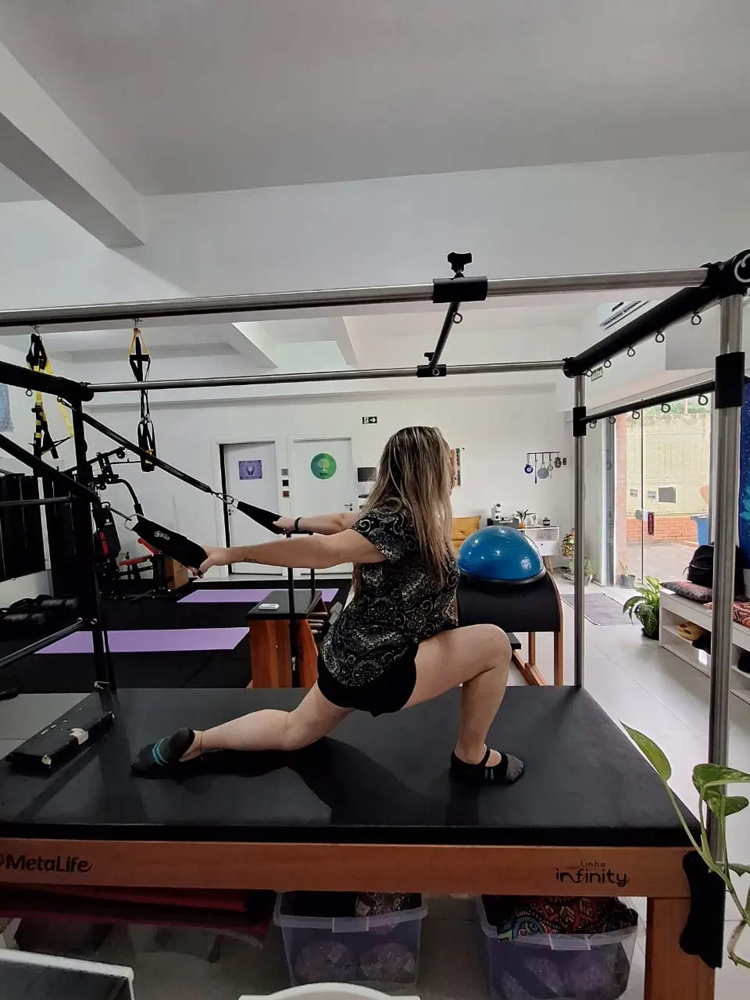

01
Prática Integrativa
Estabilidade e Presença
Pilates Revygore Integrativo
O Pilates Revygore é uma prática terapêutica e física que une fortalecimento muscular, correção postural e consciência respiratória, focada no bem-estar total do indivíduo.
No Revygore Essencial, o movimento vai além do exercício: é um caminho de reconexão e transformação. Nosso Pilates nasce de uma visão integrativa, onde corpo, mente e energia caminham juntos para restaurar o seu equilíbrio e vitalidade.
Agendar Pilates